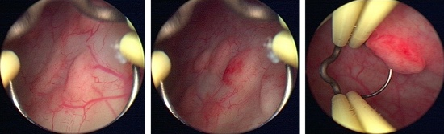

You are here: Urology Textbook > Kidneys > Malacoplakia
Malacoplakia: Chronic Infection of the Urinary Tract
Definition of Malacoplakia
Malacoplakia is a chronic infection/inflammation of the urinary tract, of the gastrointestinal tract and other organ systems, with the formation of whitish-gray deposits (Dasgupta et al, 1999) (Dalla-Palma and Pozzi-Mucelli, 2000).
Epidemiology of Malacoplakia
Malacoplakia is rare, the most common urological manifestation is the urinary bladder. Female : male ratio = 4:1
|  |
Etiology of Malacoplakia
Malacoplakia is caused by a defect in the bacterial decomposition within phagosomes, this leads to the formation of intracellular Michaelis-Gutmann bodies (see pathology). The main risk factor for malacoplakia is a chronic urinary tract infection (in 90%). Further risk factors are immune deficiency, malignancy or other consuming systemic disease.
Pathology of Malacoplakia
Macroscopy:
Typical malacoplakia lesions are whitish-gray, plaque-like protrusions of the mucosa with sometimes hemorrhagic rim. The lesion becomes indurated due to scarring. Most commonly, malacoplakia affects the urinary bladder in women, but in principle all urogenital organs might be involved.
Histology:
Large histiocytes (Hansemann cells) with small basophilic intracytoplasmic inclusions (Michaelis-Gutmann bodies) of extracellular matrix are pathognomonic for malacoplakia.
Signs and Symptoms of Malacoplakia
- Most patients are older than 50 years, suffer from a consuming disease and have chronic urinary tract infections.
- Bladder manifestation: dysuria, pollakisuria and possibly hematuria.
- Lesions of the ureter: hydronephrosis with flank pain or fever.
- Renal lesions: radiological signs of a tumor, nonspecific symptoms.
- Testicular lesions lead to pain and scrotal swelling.
Diagnostic Work-Up
- Urine culture, blood culture.
- The radiological diagnosis depends on the affected organ and masses or filling defects are revealed (Ultrasound, intravenous urography, abdominal CT).
- Do cystoscopy [malacoplakia of the bladder] or ureteroscopy and biopsy of lesions.
Treatment of Malacoplakia
Antibiotic therapy:
Long-term antibiotic treatment with fluoroquinolones, co-trimoxazole, rifampin, sulfonamides, or doxycycline.
Surgical treatment:
Transurethral resection, internal ureteral stenting in case of hydronephrosis, nephrectomy in case of renal malacoplakia, depending on symptoms and organ function.
Prognosis of Malacoplakia
Patients with malacoplakia of the bladder or unilateral renal manifestation have a good prognosis after adequate treatment. However, serious complications are possible in patients with bilateral renal manifestation or malacoplakia after kidney transplantation.
| Tuberculosis | Index | Kidney diseases |
Index: 1–9 A B C D E F G H I J K L M N O P Q R S T U V W X Y Z
References
- Dasgupta u.a. 1999 DASGUPTA, P. ; WOMACK, C. ; TURNER, A. G. ; BLACKFORD, H. N.:
- Malacoplakia: von Hansemann’s disease.
In: BJU Int
84 (1999), Nr. 4, S. 464–9
- Dalla-Palma und Pozzi-Mucelli 2000 DALLA-PALMA, L. ; POZZI-MUCELLI, F.:
- [The imaging of chronic renal infections].
In: Radiologe
40 (2000), Nr. 6, S. 537–46
 Deutsche Version: Muster
Deutsche Version: Muster